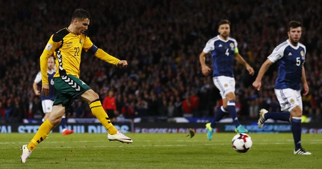

futbolas
Vyrų rinktinė - Lietuvos Futbolas

Pagrindinis Rinktinės Vyrų Vyrų rinktinė U-21 vaikinai U-19 vaikinai U-18 vaikinai U-17 vaikinai U-16 vaikinai Moterų Moterų rinktinė U-19 merginos U-18 merginos U-17 merginos U-16 merginos U-15 merginos Futsal Futsal rinktinė Futsal U-19 rinktinė Paplūdimio Paplūdimio rinktinė Varžybos Vyrų A lyga I lyga ( 1-8 vietos , 9-14 vietos ) Hegelmann LFF Taurė Moterų Moterų A lyga LMFA I lyga Merginų elitinė lyga Mergaičių 2007 m. gim. ir jaun. č. ( Pietų-Rytų , Šiaurės-Vakarų )
Mergaičių 2009 m. gim. ir jaun. č.
Moterų futsal čempionatas ( Pietų-Rytų , Šiaurės-Vakarų )
Moterų regioninė lyga ( Pietų A , Pietų B , Vilniaus )
Mėgėjų II Lyga Pietų Zona ( 1-8 vietos , 9-14 vietos ) II Lyga Vakarų Zona ( 1-6 vietos , 7-12 vietos ) Alytaus III lyga KAFF ir MAFF III lyga Šiaulių III lyga KLFF III lyga Jaunimo Jaunimo U-19 čempionatas ( Pietų-Rytų , Šiaurės-Vakarų ) SHARP EJL U-17 divizionas SHARP EJL U-16 divizionas SHARP EJL U-15 divizionas
Jaunučių U-14 divizionas ( Pietų-Rytų , Šiaurės-Vakarų )
Jaunučių U-13 divizionas ( Pietų , Rytų , Šiaurės-Vakarų )
I lygos U-17 divizionas ( Pietų-Rytų , Šiaurės-Vakarų )
I lygos U-16 divizionas ( Pietų-Rytų , Šiaurės-Vakarų )
I lygos U-15 divizionas ( Pietų-Rytų , Šiaurės-Vakarų )
I lygos U-14 divizionas Futsal Futsal A Lyga ( Atkrintamosios ) Let’s go Futsal I lyga Futsal Taurė 2020 ( Centrinis-Rytų , Vakarų , II ir kiti turai ) Paplūdimio 2020 m. Stiklita paplūdimio čempionatas ( Grupė A , Grupė B , Finalinis etapas ) 2020 m. Stiklita Lietuvos paplūdimio futbolo taurė ( Grupė A , Grupė B , Grupė C , Atkrintamosios ) Studentai Lietuvos studentų futbolo čempionatas Veteranai/Senjorai 2020 Lietuvos veteranų 35+ pirmenybės – Aukštaitija 2020 Lietuvos veteranų 40+ pirmenybės 2020 Lietuvos senjorų 50+ pirmenybės 2020 Lietuvos veteranų 35+ pirmenybės - Žemaitija 2020 Lietuvos veteranų 35+ pirmenybės - Finalinis ketvertas Masinis U12 mokyklų vaikinų futsal žaidynės "MrGolas" U14 mokyklų vaikinų futsal žaidynės "MrGolas" U16 mokyklų vaikinų futsal žaidynės "MrGolas" U12 merginų futsal žaidynės "LadyGolas" U14 merginų futsal žaidynės "LadyGolas" U16 merginų futsal žaidynės "LadyGolas"
Lietuva
Vyrų rinktinė
Praėjusios rungtynės
2020-10-14 / 19:00
Lietuva : Albanija 0 : 0Kitos rungtynės
2020-11-11 / 19:00
Lietuva : Farerų salos Sudėtis Rungtynės Žaidėjai Rungt. Minutės Įvarčiai Geltonos Raudonos Vartininkai V Edvinas Gertmonas 1 90 - - - V Deividas Mikelionis - - - - - V Tomas Švedkauskas 4 360 - - - Gynėjai G Dominykas Barauskas - - - - - G Markas Beneta 3 148 - - - G Vytas Gašpuitis - - - - - G Edvinas Girdvainis 27 2352 - 5 - G Mindaugas Palionis 1 90 - - - G Egidijus Vaitkūnas 47 3585 - 12 - Saugai S Martynas Dapkus 6 235 - 2 - S Paulius Golubickas 9 531 - 1 - S Donatas Kazlauskas 17 498 2 4 - S Justas Lasickas 16 912 - 5 - S Saulius Mikoliūnas 88 5309 5 16 - S Arvydas Novikovas 61 4678 9 10 - S Daniel Romanovskij 4 41 - - - S Domantas Šimkus 13 997 - 1 - S Gratas Sirgėdas 11 538 - 1 - S Ovidijus Verbickas 20 1180 1 3 - S Modestas Vorobjovas 21 1557 - 6 - Puolėjai P Fedor Černych 59 4362 9 2 - P Karolis Laukžemis 17 696 2 3 - P Gytis Paulauskas - - - - - Data Varžybos Namų komanda Svečių komanda Rez. 2020-11-18 17:00 2021 UEFA Nations League - League phase - GrpC4 Kazachstanas Lietuva - : - 2020-11-15 19:00 2021 UEFA Nations League - League phase - GrpC4 Baltarusija Lietuva - : - 2020-11-11 19:00 Pārbaudes spēle - Football - Male - A Lietuva Farerų salos - : - 2020-10-14 19:00 2021 UEFA Nations League - League phase - GrpC4 Lietuva Albanija 0 : 0 2020-10-11 19:00 2021 UEFA Nations League - League phase - GrpC4 Lietuva Baltarusija 2 : 2 2020-10-07 19:00 Pārbaudes spēle - Football - Male - A Estija Lietuva 1 : 3 2020-09-07 21:45 2021 UEFA Nations League - League phase - GrpC4 Albanija Lietuva 0 : 1 2020-09-04 19:00 2021 UEFA Nations League - League phase - GrpC4 Lietuva Kazachstanas 0 : 2 2019-11-17 16:00 Friendly match - Football - Man - A Lietuva New Zealand 1 : 0 2019-11-14 21:45 nav_euro - Qualifying Round - Grp B Portugalija Lietuva 6 : 0 2019-10-14 21:45 nav_euro - Qualifying Round - Grp B Lietuva Serbija 1 : 2 2019-10-11 21:45 nav_euro - Qualifying Round - Grp B Ukraina Lietuva 2 : 0 2019-09-10 21:45 nav_euro - Qualifying Round - Grp B Lietuva Portugalija 1 : 5 2019-09-07 19:00 nav_euro - Qualifying Round - Grp B Lietuva Ukraina 0 : 3 1 2 3 4 ... 27 KitasLentelė - 2021 UEFA Nations League - League phase - GrpC4
# Klubas Rungt. Perg. Lyg. Pral. Įm. Įv. Pral. Įv. Įv. skirt. Tšk. 1. Baltarusija 4 2 1 1 6 5 +1 7 2. Albanija 4 1 2 1 2 1 +1 5 3. Lietuva 4 1 2 1 3 4 -1 5 4. Kazachstanas 4 1 1 2 3 4 -1 4© 2020 Lietuvos futbolo federacija. Visos teisės saugomos.
Privatumo politikaweb by: Auris
Posted by Jack  Read more
Read more  Comments (15)
Comments (15)  2020.10.29 06:22
2020.10.29 06:22